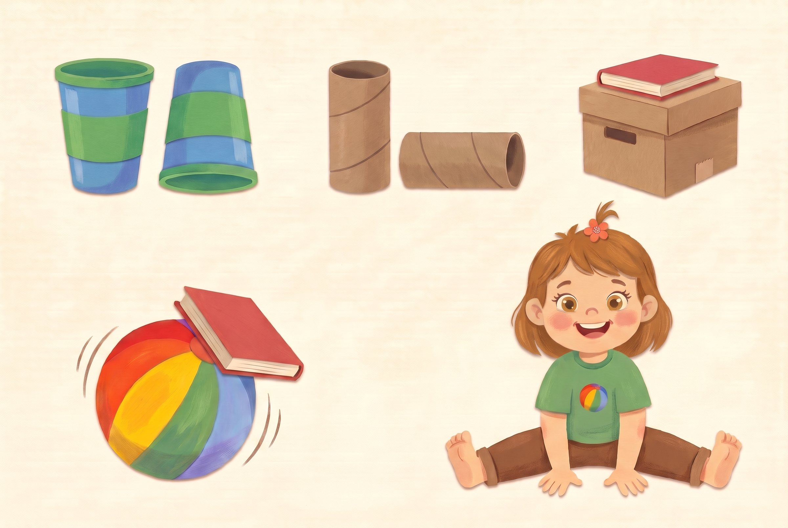
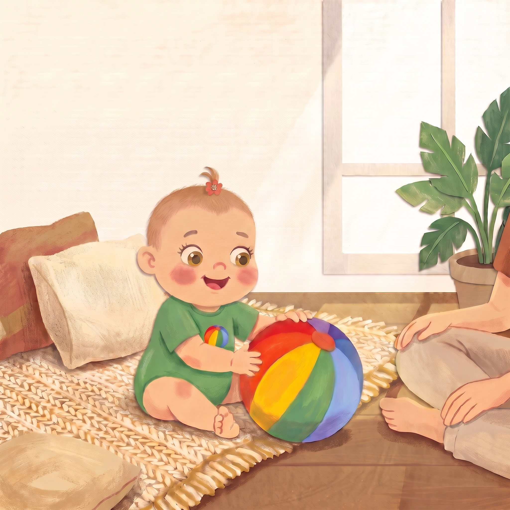

Necesitás: un vaso de plástico, un rollo de papel higiénico vacío, una caja chica, una pelota, una naranja y un libro finito.

| Objeto | ¿Se queda quieto? | ¿Aguanta el libro? |
|---|---|---|
| Vaso boca arriba | ||
| Vaso boca abajo | ||
| Rollo parado | ||
| Rollo acostado | ||
| Caja | ||
| Pelota | ||
| Naranja |
En cada casillero escribí o dibujá: sí o no.

El concepto. Un objeto se mantiene en equilibrio cuando su peso cae dentro de su base de apoyo. Cuanto más ancha es la base y más bajo está el peso, más difícil es que se vuelque. Al sentarse, el bebé abre las piernas y apoya las manos adelante: arma una base ancha, como un trípode. Con la práctica, sus músculos aprenden a corregir el bamboleo y ya no necesita las manos.
El hito. Muchos bebés empiezan a sentarse apoyando las manos entre los 6 y los 8 meses, más o menos, y un poco después lo logran sin ayuda. Cada bebé tiene su ritmo; ante cualquier duda, lo mejor es consultar al pediatra.
Seguridad. Al principio se cae seguido: conviene practicar en el piso, sobre una manta, con almohadones alrededor y un adulto cerca. Nunca se lo deja sentado solo en un lugar alto, como la cama, la mesa o el sillón.
Para charlar después de leer: ¿Qué cosas de tu casa son altas y cuáles son bajas? ¿Por qué las sillas y las mesas tienen cuatro patas? ¿Qué está cerca y qué está lejos de donde estás sentada ahora?